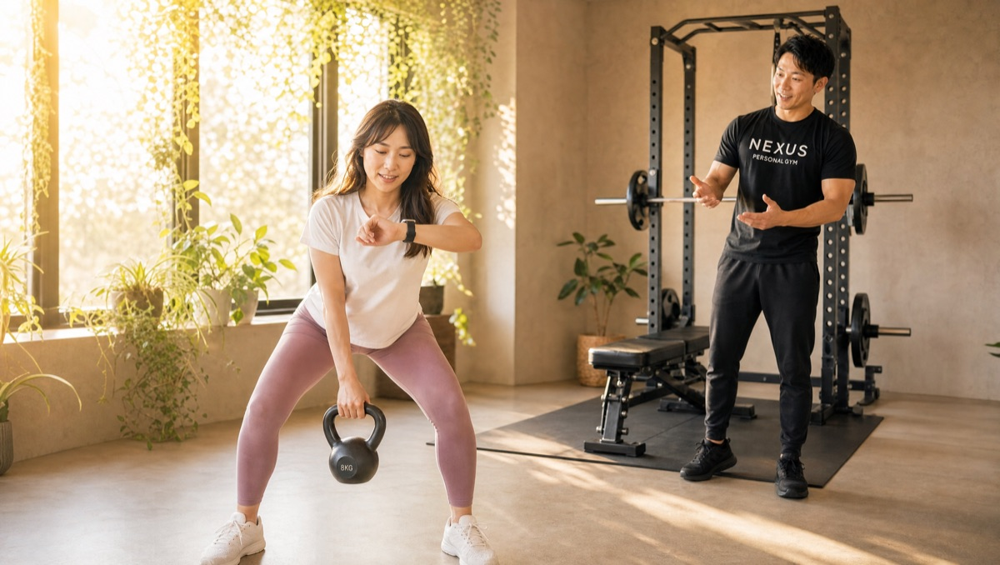
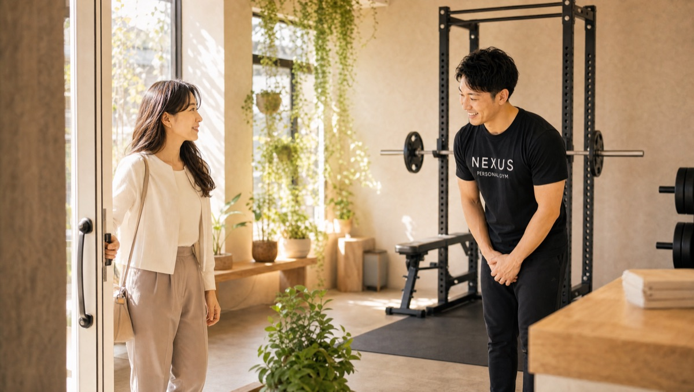
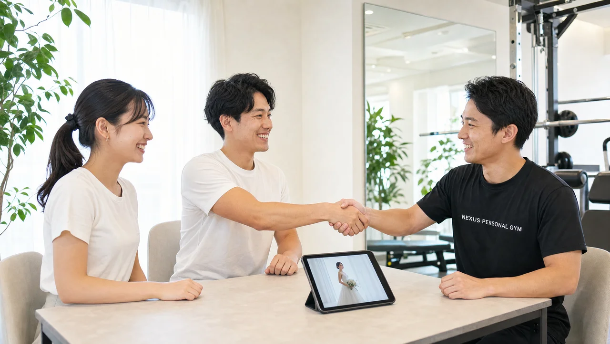
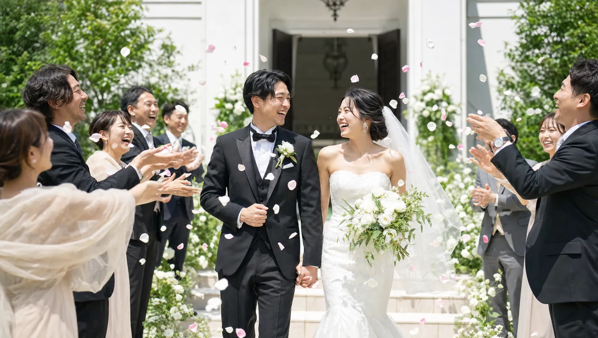

NEXUS Personal Gym ／ 東京都文京区
NEXUSパーソナルジム 白山店｜白山の完全個室・隠れ家ジム
都営三田線・白山駅から徒歩すぐ。東洋大学白山キャンパスにも近い文京区白山の完全個室パーソナルジムです。「本気で追い込みたい」人に選ばれ、Google口コミ★4.9（59件）。妥協させない指導と、仕事帰りに立ち寄れる駅近の通いやすさが評価されています。
- ブライダル対応
- 完全個室
- 白山駅すぐ
- 本気で追い込む指導
- 手ぶら通いOK
- AI食事指導

この店舗の特徴
NEXUS白山店は、都営三田線・白山駅から徒歩すぐの完全個室パーソナルジム。東洋大学白山キャンパスや白山上の商店街にも近い、文京区の落ち着いた立地です。都営三田線なので、白山駅だけでなく千石・本駒込・春日・水道橋方面からもアクセスしやすく、勤め先や大学・自宅の帰り道に立ち寄る会員が多いのが特徴。「中途半端ではなく、本気で身体を変えたい」という方に選ばれています。ウェア・タオル・プロテインまで無料提供の手ぶら通いOKで、荷物なしでバッグひとつで通えます。料金は1回4,500円〜（ライトコース30分・月4回18,000円）から始められます。
甘やかさない、でも見捨てない指導

白山店の指導は、ただ優しいだけではありません。会員の口コミには「限界まで追い込みつつ、諦めそうになると励まして最後までやり切らせてくれる」という声があります。追い込むところは追い込み、折れそうな時は最後まで伴走する——このメリハリが白山店の指導スタイルです。一人でのトレーニングだと「今日はこのくらいでいいか」と手を抜いてしまいがちですが、完全個室のマンツーマンならその逃げ道がありません。「一人だと妥協してしまう自分に、この強制力がちょうどいい」という方にこそ、白山店の指導は効きます。本気で結果を出したい方ほど、その手応えを実感できます。
正しいフォームで、安全に追い込む

「追い込む」といっても、やみくもに重い負荷をかけるわけではありません。白山店のトレーナーは、狙った筋肉に正しく効かせるフォームをその場で細かく修正します。フォームが崩れたままの追い込みは、関節や腰を痛める原因になるだけで結果につながりません。正しい動作で、狙った部位に、限界の一歩手前まで——だから初心者でも安全に、しっかり負荷をかけられます。口コミでも「初心者だったが丁寧に指導してもらえて安心して続けられている」と評価されています。
転勤・引越しで文京区に来た方へ

白山店には、転勤や引っ越しを機に文京区でジムを探して入会された方が多くいらっしゃいます。「転勤を機に文京区でジムを探して入会した」という口コミもいただいています。環境が変わるタイミングは、身体を立て直す絶好の機会。生活リズムがまだ固まっていない時期だからこそ、そこにトレーニングを組み込めば、無理なく新しい習慣として定着します。白山駅すぐの完全個室なので、引っ越し直後で片付けや手続きに追われる忙しい時期でも、手ぶらでふらっと通い続けられます。まずは体験で、新生活のリズムづくりから始めてみてください。
6ヶ月で結果を出す設計
白山店は、短期の無理な追い込みで一時的に絞るのではなく、続けながら結果を出す設計です。「ジムが続かない性格だったのに、気づけば半年継続して減量に成功した」という口コミがそれを物語っています。正しいフォーム・適切な負荷・食事のサポートを積み重ね、6ヶ月かけて確実に身体を変えていく。だからリバウンドしにくく、卒業後も自分で維持できる身体づくりが可能です。月額3,000円（税込）のAI食事指導は、写真を送るだけで無理のない範囲の食べ方をアドバイス。トレーニングと組み合わせることで、成果が一段と加速します。
まずは無料体験から
「本当に自分でも追い込めるのか」「初心者でもついていけるのか」——不安があれば、まずは無料体験で確かめてください。カウンセリングで目標や運動経験をうかがったうえで、実際のトレーニングまで体験できます。白山店の指導スタイルが自分に合うか、無理な負荷ではないかを、その場で判断していただけます。無理な勧誘は一切ありません。都営三田線・白山駅すぐなので、仕事帰りや外出のついでに、まずは話だけでも聞きに来てください。
Price料金プラン
入会金は通常55,000円、無料体験当日入会で15,000円（税込）に割引。AI食事指導は月額3,000円（税込）。全店舗共通の料金です。
ReviewsGoogle口コミ★4.9（59件）
白山駅近くのNEXUS白山店はGoogle口コミ★4.9・59件。しっかり追い込む指導と通いやすい立地が評価されています。
※お客様の声はGoogle口コミの内容を要約して掲載しています。
限界まで追い込んでくれるのに、諦めそうになると励ましてくれるので、最後までやり切れます。一人だと妥協してしまう自分には、この強制力がちょうどいいです。
これまでジムが続かない性格でしたが、毎回楽しく通えて気づけば半年継続。減量にも成功しました。続けられたこと自体が自信になっています。
駅から近く、仕事帰りに通いやすいのが助かります。初心者でしたが、丁寧に指導してもらえるので安心して続けられています。
Bridal結婚式前のボディメイクにも対応
白山店では、挙式日から逆算した結婚式前のボディメイクにも対応しています。背中・二の腕・デコルテ・ウエストなど、ドレスで視線が集まる部位を完全個室のマンツーマンで整えます。挙式日から逆算した90日・60日プランで、式当日にピークを合わせます。
挙式日からの逆算タイムライン｜ブライダル専用ページを見るこの店舗のブライダル対応をくわしく

「ドレスの試着で二の腕が気になった」「背中の開いたデザインを、体型を理由に諦めたくない」——挙式という動かせない期日があるからこそ、ボディメイクは最後までやり切れます。白山店では、まず挙式日とドレスのデザインをうかがい、背中・二の腕・デコルテ・ウエストという、ドレスでもっとも視線が集まる部位から優先順位をつけていきます。完全個室のマンツーマンだから、人目を気にせず自分の身体とだけ向き合えます。

残された日数によって、やるべきことは変わります。白山店では挙式日から逆算した90日プラン・60日プランを用意し、「いつまでに、どの部位を、どこまで」を最初に設計します。極端な食事制限で当日フラフラ……ということがないよう、その日のコンディションから逆算する無理のない指導で、式当日にピークを合わせます。会員の約85%が女性で、ブライダルのご相談は日常的。体に不必要に触れないノータッチ指導を基本にしているので、はじめての方も安心です。

週を追うごとに、ドレスの試着で鏡に映る自分が変わっていきます。背中がすっと伸び、二の腕のたるみが引き締まり、デコルテに華やかさが出る。「このデザインで大丈夫かな」から「このドレスを選んでよかった」へ——目標が数字ではなく“当日の自分の姿”だからこそ、モチベーションが途切れません。白山エリアで挙式を予定されている方は、エリア内の式場への下見や打ち合わせの動線に、そのままトレーニングを組み込めます。

迎えた挙式当日。積み重ねた90日・60日は、鏡の前の安心感になって返ってきます。姿勢よく背筋を伸ばして立ち、写真のどの角度でも堂々といられる——それは、頑張ってきた自分だけが手にできる自信です。白山店は、その一日のために全力で伴走します。

挙式は、新しい生活のスタートでもあります。せっかく作り上げた身体を、そのまま新生活の習慣に。白山店は毎日8:00〜23:00営業・月4回18,000円（1回4,500円〜）から続けられるので、挙式後の体型維持から、将来の産後の体型戻しまで長く伴走できます。全国約70店舗のネットワークがあるため、引っ越しや里帰りの際も最寄り店舗へ。「一生に一度」のために始めた習慣が、その後の人生を支える土台になります。
挙式まで残り80日で駆け込みました。背中の開いたドレスに合わせて、二の腕と背中を中心にプランを組んでもらい、当日は自信を持って写真に写れました。式後もそのまま通っています。
上記はサービス内容をわかりやすく伝えるためのモデルケース（イメージ）であり、実在するお客様の口コミではありません。Google口コミは本ページ内の該当セクションに実際の内容を要約して掲載しています。
挙式日からの逆算タイムライン｜ブライダル専用ページを見るアクセス
- 店舗名
- NEXUSパーソナルジム 白山店
- 住所
- 〒113-0001
東京都文京区白山5-36-14 マガザン白山B100 3階 - 最寄り駅
- 都営三田線 白山駅
- 営業時間
- 8:00〜23:00
- 電話番号
- 050-1790-8488
白山店のよくある質問
Q白山駅から近いパーソナルジムはありますか？+
Qしっかり追い込んでくれるジムを探しています。+
Q文京区に引っ越してきたばかりでも通えますか？+
Q白山駅以外の駅からも通えますか？+
Q追い込むと聞いて不安です。運動初心者でもついていけますか？+
Q女性一人でも通いやすいですか？+
Q挙式まで3ヶ月ですが、結婚式に間に合いますか？+
Qドレスで気になる背中や二の腕を集中的に絞れますか？+
Q結婚式が終わった後も通い続けられますか？+
よくある質問（全店共通）
料金・制度などNEXUS全店に共通するご質問です。さらに詳しくは110問のFAQをご覧ください。
Q料金はいくらですか？+
Q手ぶらで通えますか？+
Qキャンセルはいつまでできますか？+
Q食事指導はありますか？+
Qトレーナーはどんな人ですか？+
NEXUSパーソナルジム公式サイトを見る